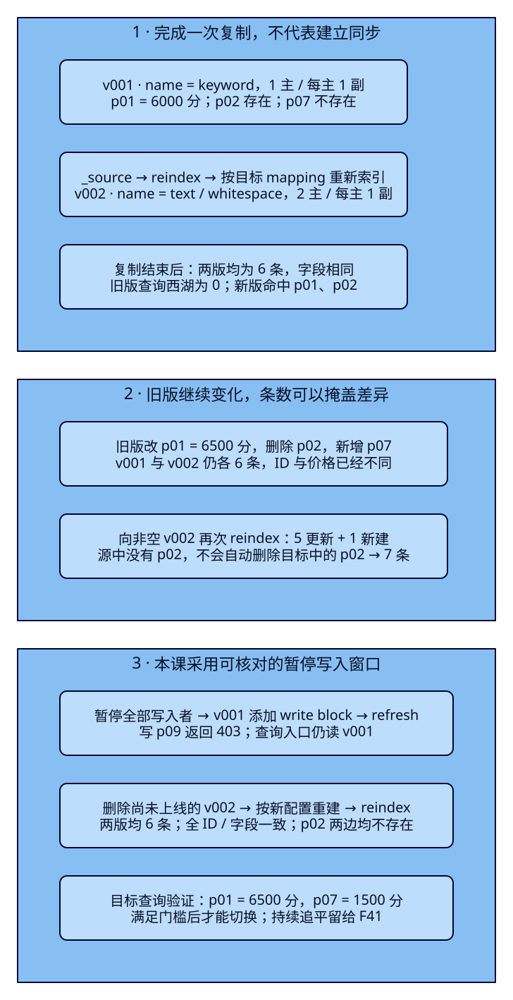
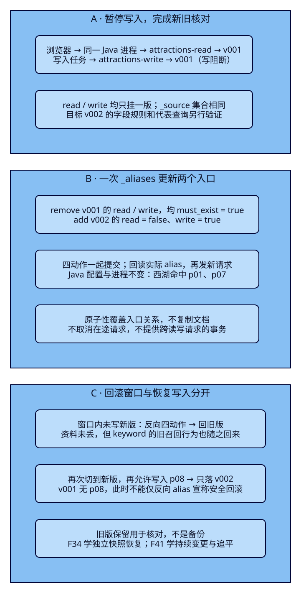

字段规则变了，
搜索入口怎样平稳切换？
游客输入“西湖”，旧索引却把“西湖 湖畔”整串当作一个精确值，搜索没有结果。运营准备换成能拆开词项的字段规则，但迁移时还可能改价、下架和新增景点。本课让同一个Java搜索入口切到新索引，先证明资料齐全，再演练回滚；同时亲眼看到：复制结束、条数相同、alias切换成功，分别都不足以证明升级正确。
学完能用输出证明什么
- 解释旧字段为何不能直接改类型；预建新目标，用token、mapping、全ID/字段与代表查询核对一次reindex。
- 复现旧版后续增删改不自动追随，以及非空目标重跑留下删除残留；在暂停写入窗口重建干净目标并核对。
- 在一个请求中切换读写alias，验证错误前提不改变关系；用同Java进程演练回滚，并判断新版写入之后为何不能简单反向切回。
本课目录
图解跳转：01 · 复制与追随的边界 · 02 · 切换与回滚窗口
1. 迁移的是搜索投影，不是业务事实
上一课用alias把应用入口与物理索引名分开。本课再向前走一步：旧版v001的name是keyword，整串“西湖 湖畔”作为一个词项；游客只输入“西湖”，无法匹配这份文档。新版v002改为text并使用whitespace，把带空格的名称拆为“西湖”“湖畔”。这里刻意使用合成空格样本，隔离中文插件差异；不是中文分词质量方案。
mapping规定字段如何解释与索引。已经存在的keyword字段不能直接改成text；即使某类新增mapping允许更新，也不能据此假定历史词项已被重做。需要另一份具有目标规则的索引，再让原始JSON经过新规则建立词项。ES仍是搜索投影，业务数据库的事实职责不变；本课固定文件模拟来源，不引入数据库或CDC。
reindex从源检索文档，把_source写到目标。它不复制源的mapping、主副分片或alias配置，所以先明确创建目标。默认内部版本写入会覆盖同ID目标文档，但目标不是源的镜像目录：源后来改了，不会自动同步；源已经删掉的文档也不会自动变成目标上的删除动作。本课只演示单个普通源索引、单切片、无脚本/外部版本/自定义routing的复制。

官方依据与固定v9.4.0源码入口
Reindex API说明_source、预建目标与写入语义；Index blocks说明专用write block的在途写入保证；Aliases说明多动作与must_exist。固定tag的AsyncIndexBySearchAction.buildRequest构造目标写入，applyAliasActions应用入口变更，TransportAddIndexBlockAction解释阻断保证。目标源码字节核对与真实API分别记录。图中的“固定快照”指受控搜索资料视图，不是F34的备份Snapshot。
2. 本机两节点，只有两个待迁移索引
ES9.4.0/Lucene10.4.0，独立集群es-framework-f33，HTTP仅127.0.0.1:19733–19734，无认证。n1为master/data/ingest，n2为data；唯一master候选n1不停止。每节点192MiB堆、640MiB限额，仅支撑小样本。两进程共享Docker VM与磁盘，不代表跨机器容灾。源码篇9200/9201与其他课资源不变。
两基础卷均不存在时才首次bootstrap；成团后移除名单并保留UUID/node ID；原卷完整时直接启动，部分卷缺失拒绝重新引导。完整配置见稳定Compose与首次引导。先检查本机Docker资源，在仓库根目录启动：
cd projects/travel-search
python3 labs/f33/lab.py start --out /tmp/f33-reader-setup另一终端将JAVA_HOME/PATH指向完整JDK25，构建现有Boot4.0.8/官方Java与Rest5 Client9.4.8工程；应用JDK与ES内置JVM分列。整个实验只运行这一个搜索服务进程：
cd projects/travel-search/backend
./mvnw -B -ntp clean package dependency:build-classpath -Dmdep.outputFile=target/f33-classpath.txt
ES_URL=http://127.0.0.1:19733 ES_INDEX=tut-f33-attractions-read APP_PORT=18082 \
java -jar target/travel-search-0.7.0.jar回到项目目录运行三个案例。每轮先点名删除两个本课索引；每个--out都必须是新目录。没有read alias之前暂不提交搜索：
export APP_URL=http://127.0.0.1:18082
python3 labs/f33/lab.py run --out /tmp/f33-reader-round1下面按手工顺序解释相同操作。自动脚本与手工请求二选一，不在自动执行中途混入写入。完整手工请求顺序包含清理、预期错误和五个观察点；不符预期时停止，不能继续切换。请求体文件均在项目中提供。
初始6份资料：p01/p02在HZ、在售、CNY、3km内且不超20000分；p03超预算，p04城市不符，p05下架，p06名称不含西湖。p01为6000分、p02为0分。金额始终为人民币整数分，稳定按attraction_id升序，不把本课当评分实验。
完整固定6份Bulk资料
{"create":{"_id":"p01"}}
{"attraction_id":"p01","name":"西湖 湖畔","city_code":"HZ","ticket_price_fen":6000,"currency":"CNY","status":"open","location":{"lat":30.25,"lon":120.15}}
{"create":{"_id":"p02"}}
{"attraction_id":"p02","name":"西湖 公园","city_code":"HZ","ticket_price_fen":0,"currency":"CNY","status":"open","location":{"lat":30.251,"lon":120.15}}
{"create":{"_id":"p03"}}
{"attraction_id":"p03","name":"西湖 山居","city_code":"HZ","ticket_price_fen":30000,"currency":"CNY","status":"open","location":{"lat":30.252,"lon":120.15}}
{"create":{"_id":"p04"}}
{"attraction_id":"p04","name":"西湖 古街","city_code":"FZ","ticket_price_fen":1000,"currency":"CNY","status":"open","location":{"lat":30.251,"lon":120.15}}
{"create":{"_id":"p05"}}
{"attraction_id":"p05","name":"西湖 故居","city_code":"HZ","ticket_price_fen":5000,"currency":"CNY","status":"closed","location":{"lat":30.253,"lon":120.15}}
{"create":{"_id":"p06"}}
{"attraction_id":"p06","name":"运河 西溪","city_code":"HZ","ticket_price_fen":1000,"currency":"CNY","status":"open","location":{"lat":30.25,"lon":120.15}}3. f33-c01：同一份_source，新规则产生新召回
旧版显式1主/每主1副、refresh=-1、dynamic=strict；新版显式2主/每主1副，仍手动refresh，name改为text/whitespace并增加name.raw=keyword精确子字段。先创建目标，避免动态推断替你决定字段类型。
旧版完整创建请求与故意不兼容的mapping更新
{
"settings": {
"number_of_shards": 1,
"number_of_replicas": 1,
"refresh_interval": "-1"
},
"mappings": {
"dynamic": "strict",
"properties": {
"attraction_id": {
"type": "keyword"
},
"name": {
"type": "keyword"
},
"city_code": {
"type": "keyword"
},
"ticket_price_fen": {
"type": "integer",
"coerce": false
},
"currency": {
"type": "keyword"
},
"status": {
"type": "keyword"
},
"location": {
"type": "geo_point"
}
}
}
}{
"properties": {
"name": {
"type": "text",
"analyzer": "whitespace",
"fields": {
"raw": {
"type": "keyword"
}
}
}
}
}{
"settings": {
"number_of_shards": 2,
"number_of_replicas": 1,
"refresh_interval": "-1"
},
"mappings": {
"dynamic": "strict",
"properties": {
"attraction_id": {
"type": "keyword"
},
"name": {
"type": "text",
"analyzer": "whitespace",
"fields": {
"raw": {
"type": "keyword"
}
}
},
"city_code": {
"type": "keyword"
},
"ticket_price_fen": {
"type": "integer",
"coerce": false
},
"currency": {
"type": "keyword"
},
"status": {
"type": "keyword"
},
"location": {
"type": "geo_point"
}
}
}
}先清理本课两个索引、创建旧版、Bulk写入、refresh并把read/write挂旧版。随后直接改旧name类型，实测400/illegal_argument_exception，reason为mapper [name] cannot be changed from type [keyword] to [text]。这次拒绝没有把旧版变成新版。
export F33_ES=http://127.0.0.1:19733
# c01: explicit old/new schema, fixed initial copy.
curl -sS -X DELETE "$F33_ES/tut-f33-attractions-v001"
curl -sS -X DELETE "$F33_ES/tut-f33-attractions-v002"
curl -sS -X PUT "$F33_ES/tut-f33-attractions-v001" -H 'Content-Type: application/json' --data-binary @search/f33/create-old.json
curl -sS -X POST "$F33_ES/tut-f33-attractions-v001/_bulk?wait_for_active_shards=all" -H 'Content-Type: application/x-ndjson' --data-binary @data/f33/v001.ndjson
curl -sS -X POST "$F33_ES/tut-f33-attractions-v001/_refresh"
curl -sS -X POST "$F33_ES/_aliases" -H 'Content-Type: application/json' --data-binary @search/f33/aliases-initial.json
curl -sS -X PUT "$F33_ES/tut-f33-attractions-v001/_mapping" -H 'Content-Type: application/json' --data-binary @search/f33/incompatible-mapping.json
curl -sS -X PUT "$F33_ES/tut-f33-attractions-v002" -H 'Content-Type: application/json' --data-binary @search/f33/create-new.json
curl -sS -X POST "$F33_ES/tut-f33-attractions-v001/_analyze" -H 'Content-Type: application/json' --data-binary @search/f33/analyze.json
curl -sS -X POST "$F33_ES/tut-f33-attractions-v002/_analyze" -H 'Content-Type: application/json' --data-binary @search/f33/analyze.json
curl -sS -X POST "$F33_ES/_reindex?wait_for_completion=true&wait_for_active_shards=all&refresh=true&slices=1" -H 'Content-Type: application/json' --data-binary @search/f33/reindex.json
curl -sS -X POST "$F33_ES/tut-f33-attractions-v002/_search?allow_partial_search_results=false" -H 'Content-Type: application/json' --data-binary @search/f33/search.json_analyze使用相同输入{"field":"name","text":"西湖 湖畔"}。旧版token为["西湖 湖畔"]，新版为["西湖","湖畔"]。上面的复制请求体只有源、目标，目标采用自己的字段规则：
{
"source": {
"index": "tut-f33-attractions-v001"
},
"dest": {
"index": "tut-f33-attractions-v002"
}
}本课显式wait_for_completion=true等任务完成，slices=1避免分片子任务视图差异，wait_for_active_shards=all要求写前所需副本活跃，refresh=true让完成后的目标可搜索；这些参数不构成持续同步。初始复制期间源没有任何变化，实测total=6、created=6、updated=0、version_conflicts=0、failures=[]、timed_out=false。HTTP200仍要检查这些任务结果；有失败不能继续上线，异步返回task ID也不能当完成。
复制后核对完整_id与_source均相同，目标查询“西湖”命中p01/p02，分别6000/0分。源name仍是keyword，目标仍2主；Java的read alias仍指旧版，所以本机观察窗是200/0条。这是尚未切换的旧召回行为，不是Java断连。DSL完整如下，后续观察窗返回的同一请求体也会独立重放：
{
"size": 20,
"track_total_hits": true,
"track_scores": true,
"_source": {
"includes": [
"attraction_id",
"name",
"city_code",
"ticket_price_fen",
"currency",
"status",
"location"
]
},
"query": {
"bool": {
"must": [
{
"match": {
"name": {
"query": "西湖",
"operator": "or"
}
}
}
],
"filter": [
{
"term": {
"city_code": {
"value": "HZ"
}
}
},
{
"term": {
"currency": {
"value": "CNY"
}
}
},
{
"range": {
"ticket_price_fen": {
"gte": 0.0,
"lte": 20000.0
}
}
},
{
"term": {
"status": {
"value": "open"
}
}
},
{
"geo_distance": {
"distance": "3.0km",
"distance_type": "arc",
"location": {
"lat": 30.25,
"lon": 120.15
}
}
}
]
}
},
"sort": [
{
"attraction_id": {
"order": "asc"
}
}
]
}4. f33-c02：条数一样，甚至重跑成功，也会错
等第一次复制已经结束，再向write alias改p01为6500分、删除p02、新增p07“西湖 栈道”1500分，最后refresh旧版。Java重复写p01得到updated，不增加文档数；Java创建p07的响应_index是v001。所有变化都发生在复制完成之后，不靠“抢在迁移中途写入”制造竞态。
curl -sS -X PUT "$F33_ES/tut-f33-attractions-write/_doc/p01?require_alias=true&wait_for_active_shards=all" -H 'Content-Type: application/json' --data-binary @data/f33/p01-updated.json
bash labs/f33/java.sh tut-f33-attractions-write p01 data/f33/p01-updated.json
curl -sS -X DELETE "$F33_ES/tut-f33-attractions-write/_doc/p02?wait_for_active_shards=all"
bash labs/f33/java.sh tut-f33-attractions-write p07 data/f33/p07.json
curl -sS -X POST "$F33_ES/tut-f33-attractions-v001/_refresh"
curl -sS "$F33_ES/tut-f33-attractions-v001/_count"
curl -sS "$F33_ES/tut-f33-attractions-v002/_count"
curl -sS -X POST "$F33_ES/_reindex?wait_for_completion=true&wait_for_active_shards=all&refresh=true&slices=1" -H 'Content-Type: application/json' --data-binary @search/f33/reindex.json
curl -sS -X POST "$F33_ES/tut-f33-attractions-v002/_search?allow_partial_search_results=false" -H 'Content-Type: application/json' --data-binary @search/f33/search.json| 观察点 | v001 | v002 | 为什么不能放行 |
|---|---|---|---|
| 第一次复制后 | 6条，p01=6000 | 6条，p01=6000 | 字段规则与代表查询另验 |
| 旧版增删改后 | 6条，p01=6500；无p02；有p07 | 6条，p01=6000；有p02；无p07 | 条数相同，ID和字段已不同 |
| 向非空目标重跑后 | 6条 | 7条，p01=6500；p02、p07都在 | 源中删除的p02没有删除事件可复制 |
第二次reindex为total=6、created=1、updated=5、deleted=0，依旧没有failures。它把源中存在的6份文档写进目标，却没有证据要求删除目标里独有的p02。于是新版“西湖”命中p01/p02/p07，包含已经删除的景点。只改conflicts=proceed或固定_id，都不能修复这份删除残留；错误地切过去，会让游客重新看到已下架资料。
5. 冻结源，丢弃未上线目标，再完整核对
本课选择容易证明的受控窗口：暂停所有业务写入者，确认无其他任务、直连物理索引的脚本或定时写入，然后对v001调用专用write block API。成功返回后，该索引的在途写入已经完成；再refresh使最后已完成的写入进入可搜索视图。写阻断不禁止读，旧版查询入口仍能服务。单独refresh不会阻止下一次写入，单独关闭某个应用也不能约束旁路写入。
curl -sS -X PUT "$F33_ES/tut-f33-attractions-v001/_block/write"
curl -sS -X PUT "$F33_ES/tut-f33-attractions-write/_doc/p09?require_alias=true" -H 'Content-Type: application/json' --data-binary @data/f33/p09.json
bash labs/f33/java.sh tut-f33-attractions-write p09 data/f33/p09.json
curl -sS -X POST "$F33_ES/tut-f33-attractions-v001/_refresh"
curl -sS "$F33_ES/_alias/tut-f33-attractions-read,tut-f33-attractions-write"
curl -sS -X DELETE "$F33_ES/tut-f33-attractions-v002"
curl -sS -X PUT "$F33_ES/tut-f33-attractions-v002" -H 'Content-Type: application/json' --data-binary @search/f33/create-new.json
curl -sS -X POST "$F33_ES/_reindex?wait_for_completion=true&wait_for_active_shards=all&refresh=true&slices=1" -H 'Content-Type: application/json' --data-binary @search/f33/reindex.json
for F33_INDEX in tut-f33-attractions-v001 tut-f33-attractions-v002; do
curl -sS "$F33_ES/$F33_INDEX/_count"
curl -sS -X POST "$F33_ES/$F33_INDEX/_search?allow_partial_search_results=false" -H 'Content-Type: application/json' -d '{"size":20,"track_total_hits":true,"query":{"match_all":{}},"sort":[{"attraction_id":"asc"}]}'
curl -sS "$F33_ES/$F33_INDEX/_doc/p02"
done
curl -sS -X POST "$F33_ES/tut-f33-attractions-v002/_search?allow_partial_search_results=false" -H 'Content-Type: application/json' --data-binary @search/f33/search.json冻结成功必须同时检查acknowledged、shards_acknowledged及indices[].blocked。REST和官方Java对p09的写入均为403/cluster_block_exception，后面确认两版均无p09。此处403来自write block，不是已经实现F35的权限控制。
确认read/write仍只挂v001后，删除尚未上线的v002并按完整新配置重建，再从已冻结、已refresh的源复制。这样目标一开始为空，无需猜测哪些目标文档该删。第三次复制created=6、updated=0、无冲突/失败；两版完整集合均为p01、p03、p04、p05、p06、p07，p01为6500分，p02两边GET均404/found=false，新版查询只有p01/p07。
放行门槛是：任务结果正常、源和目标全ID/字段一致、删除状态一致、新版mapping/settings正确、代表查询符合意图、alias尚在旧版。小样本用size=20覆盖全部6份，并校验精确总数；大索引不能拿前20条冒充全量核对。不要删除已经承载线上入口的索引；本课重建目标的前提就是它还未上线。
6. f33-c03：原子移动入口，不等于原子迁移资料
核对完成后，全部写入者继续暂停。用一个_aliases请求同时移除v001上的read/write，再把两者加入v002；read显式is_write_index=false，write显式true。两次独立调用分别移除再增加会制造入口缺失窗口，分两次切读写还可能让新查询与旧写入错开。本课四个动作在一个更新中提交：
{
"actions": [
{
"remove": {
"index": "tut-f33-attractions-v001",
"alias": "tut-f33-attractions-read",
"must_exist": true
}
},
{
"remove": {
"index": "tut-f33-attractions-v001",
"alias": "tut-f33-attractions-write",
"must_exist": true
}
},
{
"add": {
"index": "tut-f33-attractions-v002",
"alias": "tut-f33-attractions-read",
"is_write_index": false
}
},
{
"add": {
"index": "tut-f33-attractions-v002",
"alias": "tut-f33-attractions-write",
"is_write_index": true
}
}
]
}
先故意把第一个remove写成从v002移除read，它从未挂过read。must_exist=true使这次错误前提返回404/aliases_not_found_exception；回读关系仍都在v001。修正后再执行正式切换：
curl -sS -X POST "$F33_ES/_aliases" -H 'Content-Type: application/json' --data-binary @search/f33/aliases-bad-precondition.json
curl -sS "$F33_ES/_alias/tut-f33-attractions-read,tut-f33-attractions-write"
curl -sS -X POST "$F33_ES/_aliases" -H 'Content-Type: application/json' --data-binary @search/f33/aliases-switch.json
curl -sS "$F33_ES/_alias/tut-f33-attractions-read,tut-f33-attractions-write"
# Observe 03: p01=6500, p07=1500. Do NOT allow any business writes yet.
curl -sS -X POST "$APP_URL/api/attractions/search" -H 'Content-Type: application/json' --data-binary @search/f33/input.json
curl -sS -X POST "$F33_ES/_aliases" -H 'Content-Type: application/json' --data-binary @search/f33/aliases-rollback.json
curl -sS "$F33_ES/_alias/tut-f33-attractions-read,tut-f33-attractions-write"
# Observe 04: old recall returns; v001 is still write-blocked.
curl -sS -X POST "$APP_URL/api/attractions/search" -H 'Content-Type: application/json' --data-binary @search/f33/input.json
curl -sS -X PUT "$F33_ES/tut-f33-attractions-write/_doc/p09?require_alias=true" -H 'Content-Type: application/json' --data-binary @data/f33/p09.json不能把“多动作原子更新”简化成“任何动作出错都自动全拒绝”：API允许某些缺失remove动作返回分项结果而其余动作成功。本课明确给两个remove都设置must_exist=true，并核对错误响应后的实际关系；正式响应还要检查errors/action_results（若返回），不能只看acknowledged。
切换成功后GET _alias确认唯一目标v002，新提交的Java“西湖”查询变成p01=6500、p07=1500。同样四个反向动作把两个入口回v001，搜索回到200/0条：这是旧keyword行为随回滚恢复，资料本身仍完整。v001的write block也仍在，尝试写p09继续403。alias不会替你解除写阻断。
{
"actions": [
{
"remove": {
"index": "tut-f33-attractions-v002",
"alias": "tut-f33-attractions-read",
"must_exist": true
}
},
{
"remove": {
"index": "tut-f33-attractions-v002",
"alias": "tut-f33-attractions-write",
"must_exist": true
}
},
{
"add": {
"index": "tut-f33-attractions-v001",
"alias": "tut-f33-attractions-read",
"is_write_index": false
}
},
{
"add": {
"index": "tut-f33-attractions-v001",
"alias": "tut-f33-attractions-write",
"is_write_index": true
}
}
]
}本次回滚可控，因为切换后没有任何业务写入新版，两边_source仍一致。若决定留在旧版，需要在保持写入暂停、再次核对入口后解除旧版写阻断；本课正式流程不走该分支，而是再次切到v002，然后才允许受控写入p08。
curl -sS -X POST "$F33_ES/_aliases" -H 'Content-Type: application/json' --data-binary @search/f33/aliases-switch.json
# Resume the controlled writer ONLY NOW; p08 goes to v002.
bash labs/f33/java.sh tut-f33-attractions-write p08 data/f33/p08.json
curl -sS -X POST "$F33_ES/tut-f33-attractions-v002/_refresh"
curl -sS "$F33_ES/tut-f33-attractions-v001/_doc/p08"
curl -sS "$F33_ES/tut-f33-attractions-v002/_doc/p08"
# Observe 05: p01=6500, p07=1500, p08=2000; old target lacks p08.
curl -sS -X POST "$APP_URL/api/attractions/search" -H 'Content-Type: application/json' --data-binary @search/f33/input.jsonp08“西湖 新馆”2000分由官方Java写入，响应_index为v002；refresh后Java命中p01/p07/p08，v001中GET p08为404。此时保留旧索引也不能证明可以简单回滚：它缺少新版已经接收的业务事实。需要重新暂停写入、按旧结构补齐所有增删改并核对，或采用经过验证的持续投影方案；本课不执行这种回滚，F41再解决持续更新重建。
原子性只覆盖这次alias元数据变更，不取消已经发往旧版的在途查询，也不把两次独立业务请求合成事务。本课“查询入口平稳切换”指不拆开alias更新；没有进行并发压测或承诺生产零停顿。
7. REST语义不变，Java入口与进程不变
本课复用F07搜索服务，不新增管理Controller或前端。ES_INDEX始终是tut-f33-attractions-read；SearchRequest.index(index)交给ES解析alias。完整关键查询与不完整结果拒绝分支如下：
public SearchRequest request(SearchInput input) {
return SearchRequest.of(search -> search.index(index)
.size(20).trackTotalHits(t -> t.enabled(true)).trackScores(true)
.source(s -> s.filter(f -> f.includes(List.of("attraction_id", "name", "city_code",
"ticket_price_fen", "currency", "status", "location"))))
.query(q -> q.bool(b -> b
.must(m -> m.match(t -> t.field("name").query(input.q()).operator(Operator.Or)))
.filter(f -> f.term(t -> t.field("city_code").value(input.cityCode())))
.filter(f -> f.term(t -> t.field("currency").value("CNY")))
.filter(f -> f.range(r -> r.number(n -> n.field("ticket_price_fen")
.gte(0.0).lte(input.maxPriceFen().doubleValue()))))
.filter(f -> f.term(t -> t.field("status").value("open")))
.filter(f -> f.geoDistance(g -> g.field("location")
.distance(input.radiusKm() + "km").distanceType(GeoDistanceType.Arc)
.location(l -> l.latlon(p -> p.lat(input.latitude()).lon(input.longitude())))))))
.sort(s -> s.field(f -> f.field("attraction_id").order(SortOrder.Asc))));
}
public SearchResult search(SearchInput input) throws IOException {
var request = request(input);
var response = client.search(request, Attraction.class);
if (response.timedOut() || response.shards().failed().longValue() != 0
|| response.hits().total() == null) {
throw new IncompleteSearchException();
}
var items = response.hits().hits().stream().map(hit -> {
var source = hit.source();
if (source == null || !hit.id().equals(source.attractionId())
|| source.name() == null || source.ticketPriceFen() == null) {
throw new IncompleteSearchException();
}
return new SearchResult.Card(hit.id(), source.name(), source.cityCode(),
source.ticketPriceFen(), source.currency(), source.status(), hit.score());
}).toList();
String dsl = JsonpUtils.toJsonString(request, client._jsonpMapper());
return new SearchResult(response.hits().total().value(), response.hits().total().relation().jsonValue(),
response.took(), input, json.readTree(dsl), items);
}管理重建使用REST与配置，写入任务另用独立官方客户端。关键不是写死v002，而是继续使用write alias、requireAlias(true)，并核对响应_index；403明确记录，不当成写成功。下面的document是文件中完整JsonData，连接与资源白名单见完整AliasWriter：
JsonMapper json = new JsonMapper();
JsonData document = JsonData.fromJson(Files.readString(Path.of(args[2])));
try (var client = ElasticsearchClient.of(b -> b.host(url).jsonMapper(new Jackson3JsonpMapper()))) {
try {
var response = client.index(i -> i.index(args[0]).id(args[1])
.requireAlias(true).waitForActiveShards(w -> w.count(2)).document(document));
System.out.println(json.writeValueAsString(Map.of("ok", true, "response",
json.readTree(JsonpUtils.toJsonString(response, client._jsonpMapper())))));
} catch (ElasticsearchException e) {
System.out.println(json.writeValueAsString(Map.of("ok", false, "status", e.status(),
"error", json.readTree(JsonpUtils.toJsonString(e.response(), client._jsonpMapper())))));
}本机打开既有景点观察窗，输入西湖/HZ/20000分/30.25,120.15/3km。浏览器只请求Java接口，Java再访问ES；Pages不调用本机业务服务。请求体和结果区可以对照以下实际变化：
| 观察点 | 读目标 | 同输入的实际命中 | 需要解释的证据 |
|---|---|---|---|
| 初次复制完成 | v001 | 0条 | 目标虽已改善召回，入口仍旧版 |
| 源冻结、目标核对完成 | v001 | 0条 | 写入暂停不代表查询停止 |
| 正式切新 | v002 | p01/6500、p07/1500 | p02已删除，无残留 |
| 暂停写入期间回滚 | v001 | 0条 | 旧字段行为回来，写阻断仍在 |
| 再次切新并写p08 | v002 | p01/6500、p07/1500、p08/2000 | p08只在新版，简单回滚窗口结束 |
五个点REST重放Java返回DSL，核对命中ID/价格/字段；首轮还用真实浏览器检查1440/390与浅深主题。自动脚本快速经过这些点，手工请求文件标出停顿位置。DSL正文不含目标索引名，应结合Java配置、GET _alias和REST命中的_index核对实际目标。
8. 清理重做，分开看通过范围
python3 labs/f33/lab.py run --out /tmp/f33-reader-round2
python3 labs/f33/lab.py cleanup --out /tmp/f33-reader-cleanup
python3 labs/f33/lab.py down --out /tmp/f33-reader-downrun每轮先点名删tut-f33-attractions-v001与tut-f33-attractions-v002，附着alias和索引级write block随之移除，再从初始资料重做；不会删除业务资源、模板或快照仓库。guard只额外允许两个明确ES自建历史前缀，不清理它们。中断后保留失败收据，用新目录重跑，不从未知状态接着切换。down移除本课容器/网络并保留两卷；Java原终端Ctrl+C停止。
两轮各75教学REST（19+28+28）、5次Java搜索HTTP、4次官方客户端写入；75包含配置、全字段与DSL重放核对，guard/等待/清理/身份与浏览器附加请求另计。首轮是首次正式执行，第二轮点名清理后完整重做。构建、ES/Java实连、观察窗、图生成、HTTP阅读与实际视觉分别见真实运行收据和内容与阅读验收。
本课仅两个同VM数据节点、小固定样本、串行受控写入，未验证随机并发、长任务/超时重试、外部版本、脚本字段转换、自定义routing、持续CDC追平、安全授权、跨机器、性能或恢复时限。没有把作者自审称为独立审阅；运行入口无法设置或读回最新gpt-6.1-sol/max，限制单列，早期xhigh偏好保留。
9. 旧索引留着，为什么还需要F34？
这次升级能退回，是旧数据仍在且写入被严格控制。如果误删同时影响新旧版，或同一磁盘出了问题，alias无法凭空恢复资料，副本也可能同步了误删。F34将练习独立Snapshot/restore，实际恢复到隔离资源并核对字段与查询；持续改价、下架期间怎样追平和回滚，留给F41。
能力检查：先独立判断，再展开核对
1. 把v001的name改成text为什么400？重试能修复吗？
本课已有keyword字段不能直接改text。重试同一不兼容更新仍不解决。先按新规则建独立目标，再从_source重新建立索引；任务完成后还要核对查询。
2. 两版都6条，能证明迁移完整吗？给出本课反例。
不能。旧版把p01改为6500、删除p02、新增p07，条数仍6；目标仍p01=6000、有p02、无p07。全ID、字段、删除和代表查询必须分别核对。
3. 再跑一次reindex没有失败，为什么目标反而7条？
默认覆盖源中存在的同ID文档并创建p07；源里不存在p02不会产生目标删除动作。updated=5、created=1、deleted=0，目标p02保留。
4. 为什么先write block，再refresh？只做其中一个够吗？
先暂停全部写入者，专用write block成功保证源的在途写入完成；再refresh使最后状态可搜索。只refresh不阻止后续写入，只block不能据此假定最新写入已被搜索视图读取。
5. 能否删除v002重来？什么时候不可以照抄？
本课重建时v002尚未承载读写alias，源冻结且入口仍v001，才可删除该目标。不能把已上线或来源不明的索引当临时目标删除。
6. 错误remove加must_exist=true，预期什么？
从未挂read的v002移除它，实测404/aliases_not_found_exception，整次变更拒绝；GET _alias仍都在v001。成功请求仍检查响应与实际关系，不只看acknowledged。
7. p08写入之后，直接反向alias是否安全？
不安全。p08只在v002，旧版GET为404；直接切回会让已接收的新资料从当前搜索投影中缺失。需要暂停并补齐旧结构的所有变化及删除再验证，本课没有实现该方案。
8. 新需求：加入精确名称筛选，应该验证哪两个层面？
先验证新mapping的name.raw及代表term查询，再验证全部历史_source已按新mapping重建；仅新增子字段不证明旧文档已经拥有新子字段词项。最后在受控窗口同时核对资料、读写指向与回滚条件。
实际陷阱
速记
| 步骤 | 本课证据 | 成立边界 |
|---|---|---|
| 新规则 | keyword→text直接更新400；新token为西湖/湖畔 | 预建目标，不复制配置 |
| 第一次复制 | 6 created，字段一致，目标p01/p02 | 源在该次任务期间不变 |
| 变化反例 | 6对6仍不同；重跑目标7条 | reindex不自动追随，也不自动删目标残留 |
| 冻结重建 | 旧版write block/403；干净目标6条，无p02 | 全部写入者暂停；源refresh；目标未上线 |
| 入口切换 | 四动作+must_exist；实际read/write均v002 | 响应与GET alias均核对 |
| 回滚窗口 | 暂停期间反向切旧，再切新；p08只在新版 | 新写入之后不能只改入口 |
先让目标规则与资料都可解释，再移动入口；每次恢复写入，都重新判断回滚条件。